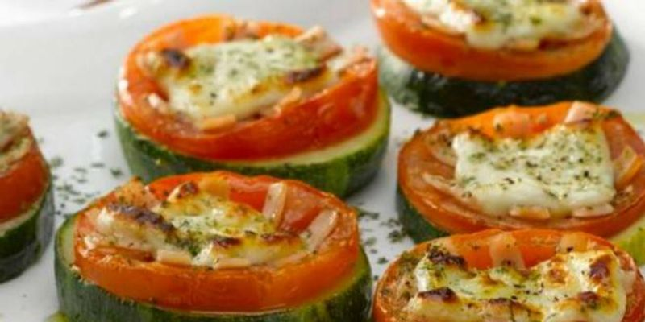

Pizzetas de zapallo italiano
Increíble receta de pizzetas de zapallo italiano. Ideal para esas noches con ganas de comer algo rico pero que no nos caiga pesado.
Ingredientes:
- • 2 zapallitos italianos grandes
- • 100 gr de queso vegano
- • 1/2 cucharadita de orégano
- • 2 cucharadas de aceite de oliva
- • 4 tomates pequeños
- • 20 aceitunas
- • Sal y pimienta al gusto
Preparación:
- Lavar y cortar en láminas gruesas los zapallos y acomodarlos en la lata del horno.
- Cubrir los zapallitos ya cortados, con los trozos de queso.
- Deshuesar y cortar las aceitunas.
- Lavar y cortar los tomates en rodajas finas y agregar sobre el queso.
- Pincelar con aceite, espolvorear pequeñas cantidades de orégano y añadir las aceitunas.
- Hornear de 5 a 6 minutos con calor medio. Verificar si el queso se ha fundido por completo y en caso necesario, hornear 1 o 2 minutos más.